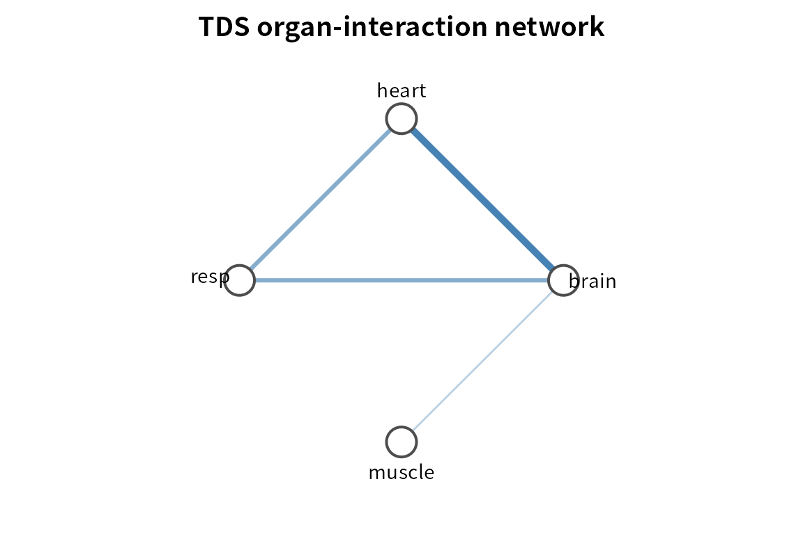
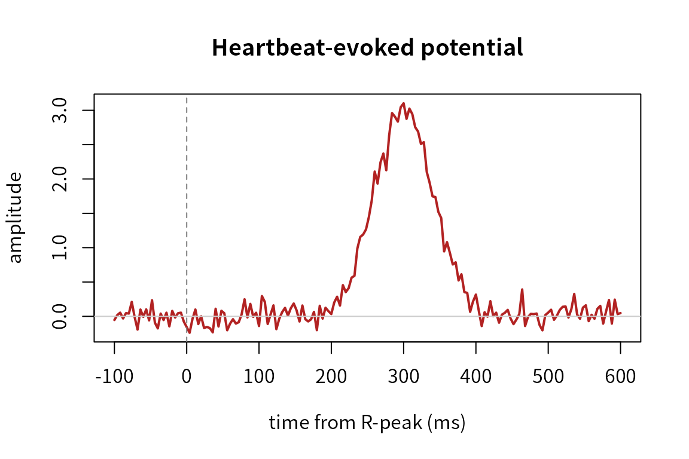

Network Physiology with PhysioNetPhysiology
Source:vignettes/network-physiology.Rmd
network-physiology.Rmd
library(PhysioNetPhysiology)
#> PhysioNetPhysiology 0.1.0 - Time Delay Stability & organ-interaction networksWhat this package does
Network Physiology studies how distinct physiological systems — brain, heart, respiration, muscle — dynamically interact. A single-modality tool cannot ask that question; this package can, because it works over a node matrix in which each column is one physiological system.
The engine is Time Delay Stability (TDS) (Bashan et al. 2012): slide a window along the recording, and in each window find the lag that maximises a pair’s cross-correlation. Where that lag stays put for a stretch of time, the two systems are stably coupled. Stable couplings become links in an organ-interaction network.
A node matrix
Nodes are physiological features sampled on a common (usually slow)
grid. Here we simulate four systems where brain drives
heart (a fixed lag), and heart drives
resp only during the second half of the recording;
muscle is independent.
n <- 4000; half <- n / 2
drive <- function() { s <- as.numeric(stats::filter(rnorm(n), rep(1/8, 8), sides = 2)); s[is.na(s)] <- 0; s }
brain <- drive()
heart <- c(rep(0, 4), brain[seq_len(n - 4)]) + rnorm(n, sd = 0.4) # brain -> heart (lag 4)
resp <- rnorm(n, sd = 0.4)
resp[(half + 4):n] <- heart[half:(n - 3)] + rnorm(half - 3, sd = 0.4) # heart -> resp, 2nd half
#> Warning in heart[half:(n - 3)] + rnorm(half - 3, sd = 0.4): longer object
#> length is not a multiple of shorter object length
#> Warning in resp[(half + 4):n] <- heart[half:(n - 3)] + rnorm(half - 3, sd =
#> 0.4): number of items to replace is not a multiple of replacement length
muscle <- rnorm(n)
X <- physioNodeMatrix(list(brain = brain, heart = heart,
resp = resp, muscle = muscle))Time Delay Stability
tds <- timeDelayStability(X, window = 200, step = 100, max_lag = 30, min_stable = 4)
summary(tds)
#> from to tds stable_lag
#> 1 brain heart 100.00000 4.0
#> 2 brain resp 51.28205 8.0
#> 3 heart resp 51.28205 4.0
#> 4 brain muscle 10.25641 17.5
#> 5 heart muscle 0.00000 NA
#> 6 resp muscle 0.00000 NAbrain–heart is stable across the whole recording;
heart–resp and the indirect brain–resp appear
because respiration is coupled for half the time.
Organ-interaction network
Links are kept only if they clear a significance threshold estimated from phase-randomised surrogates (which preserve each signal’s own spectrum but destroy cross-signal timing).
net <- tdsNetwork(tds, surrogate = TRUE, X = X, n_surrogates = 30)
net
#> <TDS organ-interaction network>
#> nodes: 4
#> threshold: 0.0% TDS
#> links: 4
#> strongest:
#> brain -- heart : 100.0%
#> brain -- resp : 51.3%
#> heart -- resp : 51.3%
#> brain -- muscle : 10.3%
plotTDSnetwork(net)
Network reconfiguration across states
The signature Network-Physiology phenomenon: the network reorganises across physiological states. Here the state switches at the midpoint.
state <- rep(c("A", "B"), each = half)
bystate <- tdsNetworkByState(X, state, window = 200, step = 100,
max_lag = 30, min_stable = 4, threshold = net$threshold)
bystate$reconfiguration
#> state windows n_links density mean_degree
#> 1 A 20 3 0.5000000 1.5
#> 2 B 19 4 0.6666667 2.0
tdsReconfiguration(bystate, from = "A", to = "B")
#> from_node to_node tds_A tds_B delta
#> 2 brain resp 5 100.00000 95.00000
#> 4 heart resp 5 100.00000 95.00000
#> 3 brain muscle 0 21.05263 21.05263
#> 1 brain heart 100 100.00000 0.00000
#> 5 heart muscle 0 0.00000 0.00000
#> 6 resp muscle 0 0.00000 0.00000The heart–resp (and indirect brain–resp)
couplings appear only in state B.
Cardiorespiratory coupling
For the heart–respiration relationship specifically, phase-based tools quantify n:m locking. Here we simulate four heartbeats per breath.
fs <- 100; t <- seq(0, 120, by = 1 / fs)
resp_sig <- sin(2 * pi * 0.25 * t)
card_sig <- sin(2 * pi * 1.00 * t)
rpeaks <- which(diff(sign(card_sig)) > 0)
cr <- cardiorespiratoryCoupling(resp_sig, rpeaks, fs)
cr
#> <Cardiorespiratory coupling>
#> dominant locking : 4:1 heartbeats:breaths (lambda = 1.00)
#> 1:1 sync index : 0.00
#> heartbeats used : 120Brain–heart: the heartbeat-evoked potential
n2 <- 60 * 250; fs2 <- 250
rp <- seq(fs2, n2 - fs2, by = round(0.9 * fs2))
eeg <- rnorm(n2)
bt <- round(0.3 * fs2); w <- round(0.04 * fs2)
for (r in rp) { idx <- (r + bt - 3*w):(r + bt + 3*w); idx <- idx[idx >= 1 & idx <= n2]
eeg[idx] <- eeg[idx] + 3 * exp(-((idx - (r + bt))^2) / (2 * w^2)) }
hep <- heartbeatEvokedPotential(eeg, rp, fs2)
hep
#> <Heartbeat-evoked potential>
#> epochs: 65
#> window: -100 to 600 ms
#> peak: 3.102 at 300 ms
plotHEP(hep)
Working with PhysioExperiment objects
physioNodeMatrix() and timeDelayStability()
also accept a PhysioExperiment (each channel becomes a
node) or a MultiPhysioExperiment (each experiment
contributes nodes), extracting a "raw" or
"envelope" feature and optionally down-sampling to a common
rate — so a multimodal recording flows straight into the TDS engine.
References
- Bashan A, Bartsch RP, Kantelhardt JW, Havlin S, Ivanov PC (2012). Network physiology reveals relations between network topology and physiological function. Nat Commun 3:702.
- Bartsch RP, Liu KKL, Bashan A, Ivanov PC (2015). Network physiology: how organ systems dynamically interact. PLoS ONE 10(11):e0142143.